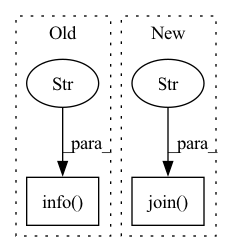

Pattern ID :15981
Before Change
def main():
// Get all the images under the folder.
for file in os.listdir(args.data):
logger.info(f"Process: `{os.path.join(args.data, file)}`." )
// Get all cut image data.
crop_images = crop_image(Image.open(os.path.join(args.data, file)))
// Save all captured image data in turn.
save_images(os.path.join(args.data, file), crop_images)After Change
save_images(os.path.join("LRunknownx2", filename), crop_imagesx2)
save_images(os.path.join("LRunknownx4", filename), crop_imagesx4)
os.remove(os.path.join("HR" , filename) )
os.remove(os.path.join("LRunknownx2", filename))
os.remove(os.path.join("LRunknownx4", filename))
In pattern: SUPERPATTERN
Frequency: 3
Non-data size: 2
Instances Fragment ID: 53819044
Project Name: lornatang/srgan-pytorch
Commit Name: fa772cbeebba29f3bd38a1512b863875b0b7ad95
Time: 2021-08-05
Author: liuchangyu1111@gmail.com
File Name: scripts/split_image.py
M Class Name: AnonimousClass
N Class Name: AnonimousClass
M Method Name: main(0)
N Method Name: main(0)
M Parent Class:
N Parent Class:
M File Name: scripts/split_image.py
N File Name: scripts/split_image.py
M Start Line: 31
M End Line: 40
N Start Line: 20
N End Line: 44
Before Change
checkpoint_file = os.path.join(
checkpoint_file, "model_best.pth.tar")
if os.path.isfile(checkpoint_file):
logging.info("loading checkpoint "%s"" , args.resume)
checkpoint = torch.load(checkpoint_file)
args.start_epoch = checkpoint["epoch"] - 1
best_prec1 = checkpoint["best_prec1"]
best_prec5 = checkpoint["best_prec5"]After Change
logging.info("saving to %s", save_path)
logging.debug("run arguments: %s", args)
else:
setup_logging(os.path.join( save_path, "logger.log" ) , filemode="a")
os.environ["CUDA_VISIBLE_DEVICES"] = args.gpus
if "cuda" in args.type: Fragment ID: 53819046
Project Name: lmbxmu/rbnn
Commit Name: 926c85c5e579b1d4fdaa6bcc2184433a5fef333c
Time: 2020-05-15
Author: 791411501@qq.com
File Name: imagenet/main.py
M Class Name: AnonimousClass
N Class Name: AnonimousClass
M Method Name: main(0)
N Method Name: main(0)
M Parent Class:
N Parent Class:
M File Name: imagenet/main.py
N File Name: imagenet/main.py
M Start Line: 35
M End Line: 159
N Start Line: 31
N End Line: 166
Before Change
run_name=run_name,
enable_caching=zenml_pipeline.enable_cache,
)
logger.info("Started pipeline run with ID "%s"." , result.run_id)
except urllib3.exceptions.HTTPError as error:
logger.warning(
"Failed to upload Kubeflow pipeline: %s. "
"If you still want to run this pipeline, upload the file "%s" "After Change
image_name = self.full_docker_image_name
image_name = get_image_digest(image_name) or image_name
pipeline_file_path = os.path.join(
self.pipeline_directory, f"{zenml_pipeline.name}.yaml"
)
runner_config = KubeflowDagRunnerConfig(image=image_name)
runner = KubeflowDagRunner(
config=runner_config, output_path=pipeline_file_path
) Fragment ID: 53819051
Project Name: maiot-io/zenml
Commit Name: ef75f406edebf870e9486e29aa193fb8043d9c8a
Time: 2021-12-08
Author: michael.schuster.ffb@googlemail.com
File Name: src/zenml/integrations/kubeflow/orchestrators/kubeflow_orchestrator.py
M Class Name: KubeflowOrchestrator
N Class Name: KubeflowOrchestrator
M Method Name: run(3)
N Method Name: run(3)
M Parent Class: BaseOrchestrator
N Parent Class: BaseOrchestrator
M File Name: src/zenml/integrations/kubeflow/orchestrators/kubeflow_orchestrator.py
N File Name: src/zenml/integrations/kubeflow/orchestrators/kubeflow_orchestrator.py
M Start Line: 87
M End Line: 138
N Start Line: 111
N End Line: 137